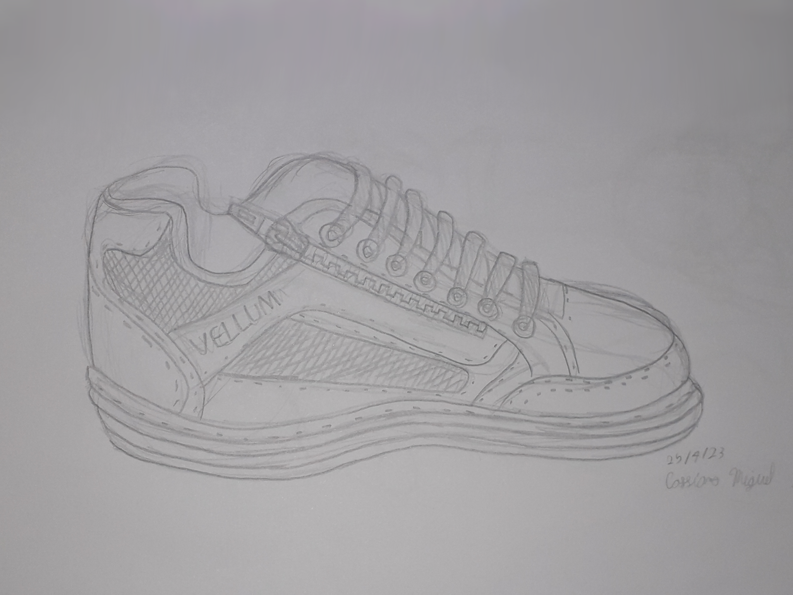
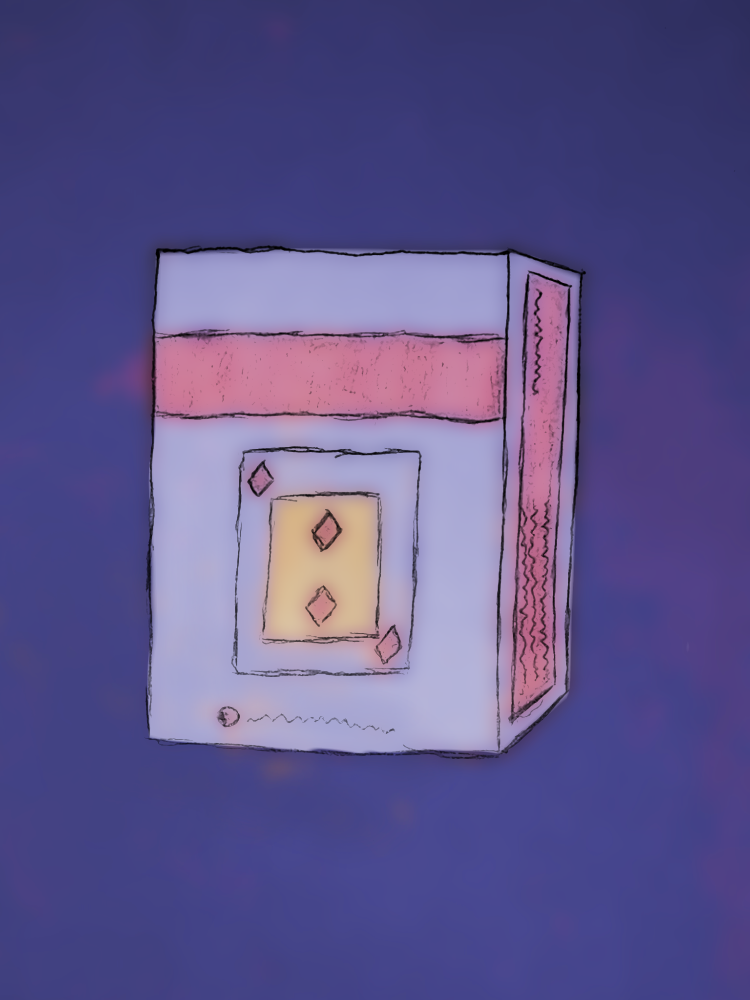

Uma releitura que fiz do quadro
"Doze Girassóis numa Jarra" de Van Goh.
Foi feito há muito tempo atrás,
então não é o melhor, mas ainda gosto dele.

Uma desenho de observação.
Fiz ele observando o meu tênis,
e desenhar todos os detalhes foi um desafio.

Um desenho de um baralho de cartas.
É um desenho bem simples,
mas acho que tem um certo charme por isso.